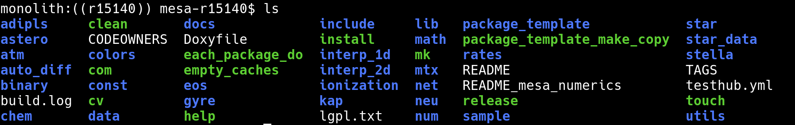
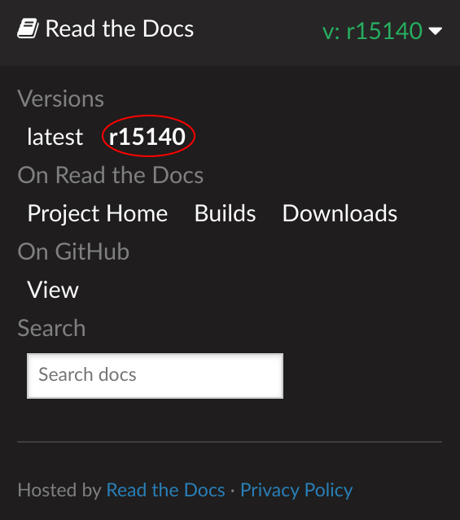

MESA Summer School 2021: Lecture 1
Table of Contents
Part 0: Overview
This guide was written as part of the 2021 MESA summer school. It is
an introduction to MESA, with a particular focus on learning how to
navigate the MESA source code and its documentation and using
run_star_extras.f90. It assumes you are using version r15140 of
MESA.
If you're new to Fortran, we prepared a short document with some examples. Don't let yourself get hung up by the Fortran; quickly ask your classmates and the TAs for help!
There is a version of this document available with solutions.
Part 1: Navigating MESA and its modules
Part 1a: The modules
MESA (Modules for Experiments in Stellar Astrophysics) is composed of modules. These are collections of Fortran files that serve a common purpose. When you list the contents of $MESA_DIR, most of the subdirectories that you see are modules.

Some modules like interp_1d (also interp_2d, math, mtx) provide supporting numerical routines and so you will rarely, if ever, need to think about them and how they work. (The exception being if you want to do something like interpolate a 1D function in Fortran yourself.)
Other modules like eos (also atm, const, kap, net, neu) provide key physical inputs/ingredients. Doing good science with MESA will require you to have a high-level understanding of what these modules do and a basic knowledge of their assumptions and limitations. (Advanced usage of MESA, say high-precision modeling of an unusual kind of star, may require a detailed understanding!)
Finally, some modules like star (also astero and binary) provide the routines needed to evolve stellar models and report their properties. What you may think of as "running MESA" is the execution of a program that uses the capabilities provided by the star module to evolve a stellar model.
Part 1b: The documentation
MESA now has documentation that lives in the source tree ($MESA_DIR/docs) and is version controlled along with the rest of MESA. This documentation is hosted online by ReadTheDocs and is available at https://docs.mesastar.org/. Bookmark this site and spend some time getting familiar with what it contains! For example, there is a page summarizing the MESA modules.
This documentation is a work in progress, but should already be useful. It will continue to grow and improve in the coming years. (MESA is now hosted on GitHub and if you see areas for improvement, you are welcome to contribute.)
The documentation is versioned. Right now, there are only two versions: r15140 (the current release) and latest (the development version). In the future, when multiple releases exist, you will want to be careful to use the documentation that matches the MESA version you're using. Controls on the lower left of the page (collapsed by default) allow you to switch versions.

Part 1c: The source code
MESA has hundreds of thousands of lines of code, so when you want to learn how something works, finding the relevant code can be a challenge. This will get easier as you get familiar with the layout and structure of MESA, but it is also worth investing some time in general techniques for searching through source code.
Tools like grep — or more advanced variants like ack, ag, or rg — allow you to rapidly search through the code base for occurrences of a given string or pattern. These tools are helpful for finding where a particular function/subroutine is defined or called or where a particular variable is used.
For example, if you execute the command grep -rI Josiah * while in $MESA_DIR you can see every occurrence of my name in the source code. (The -r argument means recursive; the -I argument excludes binary files.)
Part 1d: Putting it all together
Answering your own questions about how MESA works often requires a mixture of the documentation and source code detective work. The documentation can give you a high-level overview or a hint about where else to look, but the source code is what has the details and is ultimately the "truth".
Task 1: What is the definition of the solar mass?
Find the value of the solar mass (in grams) used in MESA and explain where it comes from and how it is calculated.
Answer
Use the documentation to figure out what module might contain code related to the solar mass. The module documentation for const describes it as containing astronomical constants (e.g., Msun), so that's where to start.
Navigate to the const directory ($MESA_DIR/const). To find where in the source code the definition occurs, grep for the string 'solar mass'.
$ grep -rI 'solar mass' * public/const_def.f90: real(dp), parameter :: Msun = mu_sun / standard_cgrav ! solar mass (g); gravitational mass, not baryonic
So we know that we want to open up the file $MESA_DIR/const/public/const_def.f90 in a text editor and follow along with the code.
Search for (and read around) the lines defining standard_cgrav and mu_sun and you'll find that standard_cgrav is the CODATA 2018 value of Newton's constant G and mu_sun is the 2015 IAU value of the standard gravitational parameter GM. Together these values give Msun = 1.98841e33 g.
Part 2: Running and controlling MESA
If you've used MESA before, much of this should be familiar.
Part 2a: Getting started
Each time you want to start a MESA project, you should make a new copy
of the star/work directory.
cp -r $MESA_DIR/star/work my_new_project
In this case, we have prepared and provided a work directory for you. Download, unpack, and enter this work directory.
unzip lecture1.zip cd lecture1
Task 2: Compile and run the provided work directory
This directory evolves a solar mass star from the middle of the main sequence to hydrogen exhaustion. Confirm that you can compile and run it. A window with a few plots should appear. Familiarize yourself with the terminal output.
You can receive valuable MESA bonus points by restarting your run.
Answer
./clean ./mk ./rn
Bonus Answer
During your run, lines line
save photos/x390 for model 390
were output to the terminal. These photos are MESA restart files.
To restart, use the re script and specify the name of the photo.
./re x390
If no photo is specified, i.e.,
./re
then MESA restarts from the most recent photo (based on filesystem modification time).
Part 2b: Using inlists
MESA/star currently has five inlist sections. Each section contains the options for a different aspect of MESA.
- star_job
- options for the program that evolves the star
- eos
- options for the MESA eos module (new!)
- kap
- options for the MESA kap module (new!)
- controls
- options for the MESA star module
- pgstar
- options for on-screen plotting
The distinction between star_job and controls can be a little
subtle.
star_job contains options that answer questions like:
- how should MESA obtain the initial model?
- are there any changes MESA should make to the initial model?
- where should MESA store its output?
controls contains options that answer questions like:
- what conditions should cause MESA to stop evolving the model?
- which angular momentum transport processes should MESA consider?
- what numerical tolerances should MESA's solvers use?
eos and kap contain options for the equation of state and opacity
modules, respectively, and answer questions like:
- what component EOSes should be used and where should they be blended?
- what composition should be assumed when calculating the opacity?
MESA's many inlist options have their default values set in *.defaults files. These files also provide documentation of the options.
For a specific module, this file (or files) is located in <module>/defaults/. So for example, the EOS defaults are described in $MESA_DIR/eos/defaults/eos.defaults. The directory $MESA_DIR/star/defaults contains star_job.defaults, controls.defaults, and pgstar.defaults.
You can directly read these defaults files as plain text. Alternatively, they are rendered as part of the online documentation.
The individual module defaults appear under Module Documentation
while the star (and also binary and astero) defaults appear under Reference
$MESA_DIR/star/defaults/star_job.defaults$MESA_DIR/star/defaults/controls.defaults$MESA_DIR/star/defaults/pgstar.defaults
They are roughly sorted into groups of related options. When you're searching for an option, see if it seems to match any of the section headings and then look there first. If that fails, try searching for some key words.
Note that inlists can point to other inlists. This can be useful for
keeping things organized. In the lecture1 directory, inlist
points MESA to inlist_project and inlist_pgstar.
Task 3: Read the documentation
Use the documentation to learn about the stopping condition that we
are using (xa_central_lower_limit and
xa_central_lower_limit_species). Look near this option to see some
of the other mass fraction based stopping conditions that are
available.
Answer
Look at the version of controls.defaults on the web or included in MESA. You should consult the documentation appropriate to your version of MESA.
The documentation for xa_central_lower_limit and xa_central_lower_limit_species says:
Lower limits on central mass fractions. Stop when central abundance drops below this limit. Can have up to num_xa_central_limits of these (see star_def.inc for value). xa_central_lower_limit_species contains an isotope name as defined in chem_def.f. xa_central_lower_limit contains the lower limit value.
Nearby you will find similar controls with upper/lower limits on average and surface mass fractions.
Part 2c: Controlling output
MESA already knows how to output a tremendous amount of information. The two key file types are history files, which store the value of scalar quantities (e.g., mass, luminosity) at different timesteps and profile files which store the value of spatially varying quantities within the model (e.g., density, pressure) at a single timestep.
Each output file contains two types of data. First there are headers, which are single values associated with the file (e.g., the version of MESA that generated the file). Then there are columns, which are lists of numbers (e.g., the luminosity at each timestep or the pressure in each cell).
The contents of MESA's output files is not directly controlled via inlists. The default output is set by the files
$MESA_DIR/star/defaults/history_columns.list $MESA_DIR/star/defaults/profile_columns.list
In order to customize the output, you copy these files to your work directory.
cp $MESA_DIR/star/defaults/history_columns.list . cp $MESA_DIR/star/defaults/profile_columns.list .
Then, open up history_columns.list or profile_columns.list in a
text editor and comment/uncomment any lines to add/remove the columns
of interest ('!' is the comment character.)
You can use run_star_extras.f90 to define your own columns and headers
in your history and profile files. We will discuss this later today.
Task 4: Add some output
Look at LOGS/history.data and LOGS/profile1.data to see what
header and column information is included by default. In our later
exercises, we will be setting the variable extra_heat, which is an
additional specific heating rate defined at each cell in the star.
Add this quantity to the output. Run MESA and confirm that the column
you want is there. Its value should be zero.
You can receive valuable MESA bonus points by including the total amount of extra heat being added to the star in your output.
Answer
Uncomment the following lines in profile_columns.list
extra_heat
and then run MESA
./rn
Bonus Answer
Uncomment the following lines in history_columns.list
extra_L
Part 3: Using run_star_extras.f90
To activate run_star_extras.f90, navigate to the lecture1/src
directory and open run_star_extras.f90 in your text editor of choice.
The stock version of run_star_extras.f90 is quite boring. It
"includes" another file which holds the default set of routines.
include 'standard_run_star_extras.inc'
The routines defined in the included file are the ones we will want to customize. Because we want these modifications to apply only to this working copy of MESA, and not to MESA as a whole, we want to replace this include statement with the contents of the included file.
Delete the aforementioned include line and insert the contents of
$MESA_DIR/include/standard_run_star_extras.inc. (The command to
insert the contents of a file in emacs is C-x i <filename>, in vim is
:r <filename>, or you can just copy and paste.)
Before we make any changes, we should check that the code compiles.
cd .. ./mk
If it doesn't compile, double check that you cleanly inserted the file and removed the include line.
The two most important things that one needs to know in order to use
run_star_extras.f90 effectively are (1) the control flow of a MESA run
and (2) the contents of the star_info structure.
The different run_star_extras.f90 routines get called at different
points during MESA execution. Here is a high-level overview of a MESA
run, written in Fortran-ish pseudocode.
subroutine run1_star(...) ! star is initialized here ! before evolve loop calls: ! extras_controls ! extras_startup call before_evolve_loop(...) ! evolve one step per loop evolve_loop: do while(continue_evolve_loop) call before_step_loop(...) ! after before_step_loop call to: ! extras_start_step step_loop: do ! may need to repeat this loop if (stop_is_requested(s)) then continue_evolve_loop = .false. result = terminate exit end if result = star_evolve_step(...) if (result == keep_going) result = star_check_model(...) if (result == keep_going) result = extras_check_model(...) if (result == keep_going) result = star_pick_next_timestep(...) if (result == keep_going) exit step_loop ! redo or retry must be done inside the step_loop if (result == redo) then result = star_prepare_to_redo(...) end if if (result == retry) then result = star_prepare_to_retry(...) end if if (result == terminate) then continue_evolve_loop = .false. exit step_loop end if end do step_loop ! once we get here, the only options are keep_going or terminate. ! after_step_loop calls: ! extras_finish_step call after_step_loop(...) if (result /= keep_going) then exit evolve_loop end if ! write data ! ! do_saves calls the following 8 hooks: ! how_many_extra_history_header_items ! data_for_extra_history_header_items ! how_many_extra_history_columns ! data_for_extra_history_columns ! how_many_extra_profile_header_items ! data_for_extra_profile_header_items ! how_many_extra_profile_columns ! data_for_extra_profile_columns call do_saves(...) end do evolve_loop ! after_evolve_loop calls: ! extras_after_evolve call after_evolve_loop(...) end subroutine run1_star
In even more distilled terms, here is a flowchart summarizing this. The blank rectangles on the right represent that you can use the indicated hooks to insert your own code to be executed by MESA at these times.

The first routine extra_controls is particularly important. It is
the place where you tell MESA exactly which subroutines it should call
for all of the rest of its hooks.
The heart of MESA is the grey "take step" box, which contains all of the machinery by which MESA evaluates and solves the equations of stellar structure.
When writing Fortran code for run_star_extras.f90, here are a few
important and useful things to know.
The star_info structure (and star_data)
The star_info structure contains all the information about the star
that is being evolved. By convention, the variable name s is used
throughout run_star_extras.f90 to refer to this structure. In
Fortran, the percent (%) operator is used to access the components of
the structure. (So you can read s% x = 3 in the same way that you
would read s.x = 3 in C or Python.)
The star_info structure contains the stellar model itself (i.e.,
zoning information, thermodynamic profile, composition profile).
The star_data module contains the definition of the star_info
structure and more specifically, these components are listed in the file
$MESA_DIR/star_data/public/star_data.inc. In addition, star_info
contains the values for the parameters that you set in your controls
inlist (i.e., initial_mass, xa_central_lower_limit).
User-specified inlist controls
There is one set of controls that will prove useful time and time
again when using run_star_extras.f90 and that is x_ctrl,
x_integer_ctrl, and x_logical_ctrl. These are arrays (of length
100 by default) of double precision, integer, and boolean values. You
can set the elements in your inlists
&controls x_ctrl(1) = 3.14 x_ctrl(2) = 2.78 x_integer_ctrl(1) = 42 x_logical_ctrl(1) = .true. / ! end of controls inlist
and access them later on as part of the star structure (i.e., s%
x_ctrl(1), etc.). With these controls, you can specify parameters in
your inlists instead of hard-coding them in run_star_extras.f90.
Physical constants (and const_def.f90)
As we already saw, MESA defines its constants in $MESA_DIR/const/public/const_def.f90.
MESA uses cgs units unless otherwise noted. The most common non-cgs
units are solar units. Since the run_star_extras module includes
the line use const_def, you can already access these definitions.
Using the built-in constants lets you make sure you're using exactly
the same definitions as MESA.
Part 3a: Monitoring your models
Task 5 (Example): Add a stopping condition
If you assume that the Earth is a perfect blackbody, its equilibrium temperature is given by
\begin{equation*} T_\oplus = T_\odot \left(\frac{R_\odot}{2\,\rm AU}\right)^{1/2} \end{equation*}
Suppose the stellar model we're evolving represents the Sun and I want
to stop my calculation when the Earth would reach a given temperature.
A look through controls.defaults seems to indicate that such a
condition doesn't already exist. How do I do this?
First, look at how the routines in run_star_extras.f90 fit into a MESA
run. To decide whether to stop, I want to check the value of the
Earth's temperature after each step. Thus, I want the subroutine that
is called after each step, which is extras_finish_step.
Now, I need to figure out how to access information about the
conditions at the stellar photosphere. I open up
star_data/public/star_data.inc and start looking around. If I search for
the word photosphere, I can find what I'm looking for photosphere_r
and Teff.
Recall that MESA defines its constants in
$MESA_DIR/const/public/const_def.f90. Looking through this file, I
find that the constant with the value of the solar radius (in cm) is
named Rsun. Note the many other constants that are defined.
I want my stopping condition to be user-editable, so instead of
hard-coding a value, I will specify x_ctrl in my inlist
! stop when Tearth > this value (in K) x_ctrl(1) = 310
and then access this value in my code. (While we're editing the inlist, comment out the H-depletion stopping condition.)
! returns either keep_going or terminate. ! note: cannot request retry; extras_check_model can do that. integer function extras_finish_step(id) integer, intent(in) :: id integer :: ierr type (star_info), pointer :: s real(dp) :: Tearth ierr = 0 call star_ptr(id, s, ierr) if (ierr /= 0) return extras_finish_step = keep_going ! calculate blackbody temperature of earth Tearth = s% Teff * sqrt(s% photosphere_r * Rsun / (2.0 * AU)) write(*,*) "Tearth =", Tearth ! stop if Tearth > a user-specified temperature (in K) if (Tearth > s% x_ctrl(1)) extras_finish_step = terminate ! to save a profile, ! s% need_to_save_profiles_now = .true. ! to update the star log, ! s% need_to_update_history_now = .true. ! see extras_check_model for information about custom termination codes ! by default, indicate where (in the code) MESA terminated if (extras_finish_step == terminate) s% termination_code = t_extras_finish_step end function extras_finish_step
Now, recompile your working directory
./mk
You will need to do this step each and every time you edit
run_star_extras.f90. (You will not need to do this when you edit only
inlist files.)
Now start the model again from the beginning
./rn
This run should halt around step 74.
Part 3b: Changing input physics
MESA provides hooks to override or modify many of its built-in routines. (These routines mostly affect things that occur within "take step" box of the flowchart.) These are referred to as "other" routines. There are two main steps needed to take advantage of this functionality: (1) writing the other routine and (2) instructing MESA to use this routine.
Navigate to $MESA_DIR/star/other, where you will see a set of files
named with the pattern other_*.f90. In general, find the one
corresponding to the physics (or numerics) that you want to alter.
Open one up and read through it. Many of the files contain comments
and examples.
Note that we do not want to directly edit these files. Instead we
want to copy the template routine into our copy of run_star_extras.f90
and then further modify it there. The template routines are usually
named either null_other_* or default_other_*.
In this example, we will focus on other_energy.f90. Open up this file.
Copy the subroutine default_other_energy and paste it into your
run_star_extras.f90. It should be at the same "level" as the other
subroutines in that file (that is, contained within the
run_star_extras module.).
subroutine default_other_energy(id, ierr) use const_def, only: Rsun integer, intent(in) :: id integer, intent(out) :: ierr type (star_info), pointer :: s integer :: k ierr = 0 call star_ptr(id, s, ierr) if (ierr /= 0) return s% extra_heat(:) = s% extra_power_source return end subroutine default_other_energy
The variable s% extra_heat is an additional specific (per mass)
heating rate that will be included. Note that this routine already
does something; default_other_energy is responsible for making the
extra_power_source control work. Go ahead and remove that bit, the
existing example, and rename it to lecture1_other_energy.
In Fortran, you can write expressions that operate on the whole array
at once (like s% extra_heat(:) = s% extra_power_source). However,
it is often simplest to explicitly set the value of extra_heat (or
some other array) one value at a time, by using a loop. While we're
looking code with a loop, it is a good time to mention that in MESA,
the outermost zone is at k=1 and the innermost zone is at k=s% nz.
Arrays may also have a size in excess of nz, but only elements 1
through nz are meaningful.
subroutine lecture1_other_energy(id, ierr) integer, intent(in) :: id integer, intent(out) :: ierr type (star_info), pointer :: s integer :: k ierr = 0 call star_ptr(id, s, ierr) if (ierr /= 0) return ! calculate extra_heat for each cell do k = 1, s% nz s% extra_heat(k) = 0 end do end subroutine lecture1_other_energy
If you read the comments in other_energy.f90 (and you should), you
can see that the file tells us how to have MESA use our other_*
routine. Perform these steps (hint: you will need to edit both your
run_star_extras.f90 and your inlists).
Task 6: Add an extra energy source in the core of the star
Use the other_energy routine to add a heating term
where \(M_r\) is the enclosed mass. Good values are \(\Delta M = 0.05 M_\odot\) and \(L_{\mathrm{extra}} = 0.1 L_\odot\).
The lower left panel in the PGSTAR plots displays the value of s%
extra_heat, so you should be able to easily check if it looks OK.
You can receive valuable MESA bonus points if your routine allows for user-specified values of \(\Delta M\) and \(L_{\mathrm{extra}}\).
Answer
First, edit the controls section of your inlist to set the appropriate
use_other_* flag to .true. . In our example, this means adding the
line
use_other_energy = .true.
Second, edit the extras_controls routine in run_star_extras.f90 to
point s% other_energy at the routine you want to be executed.
subroutine extras_controls(s, ierr) type (star_info), pointer :: s integer, intent(out) :: ierr ierr = 0 ! this is the place to set any procedure pointers you want to change ! e.g., other_wind, other_mixing, other_energy (see star_data.inc) s% other_energy => lecture1_other_energy ... end subroutine extras_controls
Failure to do perform both of these is the most common problem people encounter when using the other_* hooks.
subroutine lecture1_other_energy(id, ierr) integer, intent(in) :: id integer, intent(out) :: ierr type (star_info), pointer :: s integer :: k real(dp) :: L_extra, delta_M, Mr ierr = 0 call star_ptr(id, s, ierr) if (ierr /= 0) return ! allow user-specified values L_extra = s% x_ctrl(2) * Lsun delta_M = s% x_ctrl(3) * Msun do k = 1, s% nz ! m(k) is the enclosed mass at the outer cell edge ! so the mass coordinate at the middle of the cell is Mr = s% m(k) - 0.5 * s% dm(k) s% extra_heat(k) = L_extra * exp(-Mr/delta_M) / delta_M end do ! output rate at which energy is added write(*,'(A, 2ES12.4)') "L_extra (actual, target): ", & dot_product(s% extra_heat(1:s%nz), s% dm(1:s%nz))/Lsun, s% x_ctrl(2) end subroutine lecture1_other_energy
Part 3c: Analyzing your models
It is often useful to do some of your analysis in run_star_extras.
At runtime, you have access to more information about the star than
will be in the history and profile files. Additionally, by allowing
you to only record the final quantities of interest, this can help
make your MESA output smaller and your subsequent analysis easier.
(This is particularly useful if you are running large sets of MESA
models.)
Task 7: Compare the extra heating to nuclear heating
Calculate the local ratio of your extra heating rate to the nuclear
energy generation rate (eps_nuc) and add this quantity your MESA
output.
You can receive valuable MESA bonus points by adding this quantity to the existing PGSTAR plot window.
Answer
First, indicate that you will add an extra profile column by editing the function
integer function how_many_extra_profile_columns(id) ... how_many_extra_profile_columns = 1 end function how_many_extra_profile_columns
The subroutine data_for_extra_profile_columns already has access to
the star_info pointer, so you can make use of any of the quantities
defined in $MESA_DIR/star_data/public/star_data.inc. This includes s%
eps_nuc and the s% extra_heat you defined earlier.
The desired ratio can then be calculated in each zone.
subroutine data_for_extra_profile_columns(id, n, nz, names, vals, ierr) integer, intent(in) :: id, n, nz character (len=maxlen_profile_column_name) :: names(n) real(dp) :: vals(nz,n) integer, intent(out) :: ierr type (star_info), pointer :: s integer :: k ierr = 0 call star_ptr(id, s, ierr) if (ierr /= 0) return ! note: do NOT add the extra names to profile_columns.list ! the profile_columns.list is only for the built-in profile column options. ! it must not include the new column names you are adding here. names(1) = 'eps_ratio' do k = 1, nz vals(k,1) = s% extra_heat(k)/s% eps_nuc(k) end do end subroutine data_for_extra_profile_columns
Bonus Answer
The extra profile column acts just like an included profile column. It can easily be included in the PGSTAR plot by adding
Profile_Panels1_other_yaxis_name(1) = 'eps_ratio'
to inlist_pgstar. (The inlist was already set up to display this
nicely.) There are infinitely many ways to plot things with PGSTAR;
we'll learn more about it in Frank's lecture.